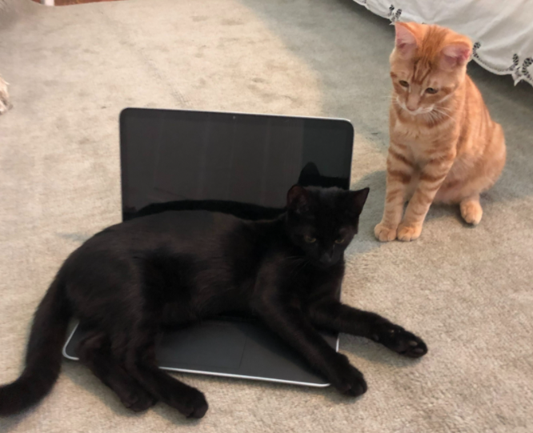
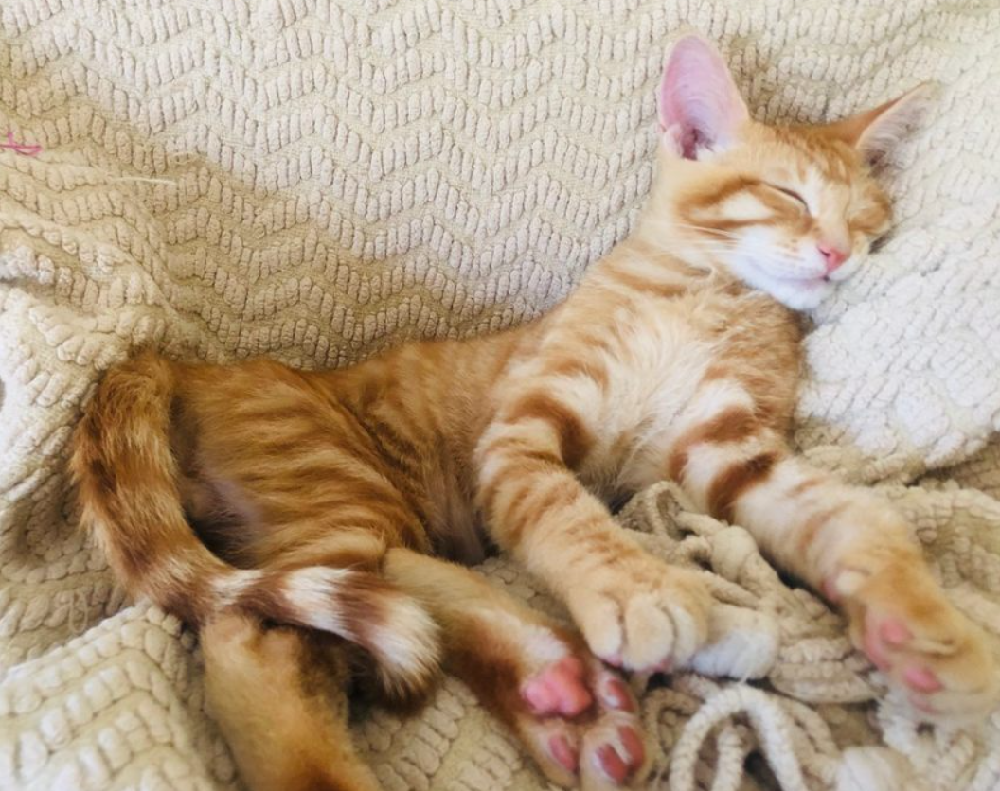
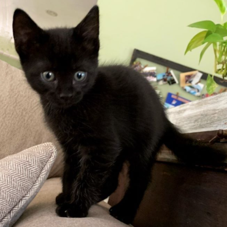

About

Hello! I'm Katherine "Kat" Cottrell. I attend Duke University as a computer science student. I am set to graduate with my Bachelor of Science in computer science in 2022. I have special interest in data science, data visualization, and image analysis. In my spare time outside of coding, I enjoy reading, creating visual art, and spending quality time with my two cats.
Frequently Asked Questions
Are you currently seeking employment?
Yes I am! I am currently on a temporary leave from Duke University due to COVID-19 and I am looking for employment. I have confirmed my leave through the spring 2020 semester, and I am likely to extend my leave through the summer 2021 semester. Interested in finding out if I might be a good fit for your team? Please contact me any time! I'd love to meet you.
What is your name?
My full name is Katherine Cottrell, but I often go by Kat. Either is great.
Are you authorized to work in the United States on a full-time and indefinite basis?
Yes! I am a natural-born citizen of the United States, and I do NOT require sponsorship for a work visa.
What is this? Are you taunting me?
Absolutely not! This is my profile image on many platforms.
(I avoid posting images of myself for digital privacy reasons.) It
is a small green alien widely known as the "Cosmic Cutie" from the cover
art of one of my favorite book series,
The Hitchhiker's Guide to the Galaxy
.
Fun fact: While I am myself a fan of the Cosmic Cutie, H2G2 author
Douglas Adams was decidedly not, quoted as saying: "I hate the little
green blob and have spent years locked in arguments with my publishers with me trying
to get rid of the obscene little thing." Sorry, Douglas!
More on my cats

My two most senior advisors
These are my cats, Pumpkin and Spooky.

Dr. Pumpkin
This is Pumpkin. Pumpkin is a Rhodes Scholar and a former college
football star. After a sports injury forced him to retire from football,
Pumpkin returned to school for an advanced degree in electrical engineering and
is now a tenured faculty member at the Institute for Advanced Study's school
of mathematics researching space-efficient local computation algorithms.

Dr. Spooky
This is Spookiloo, Spooky to close friends and colleagues.
After years of working in industry as a senior engineer at
Google, Spooky has returned to academia to pursue his passion for parallel
computation and memory systems. Spooky also volunteers his time leading
a thinktank for global gender equality in STEM.